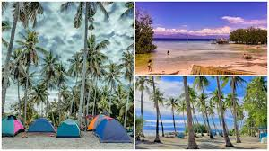
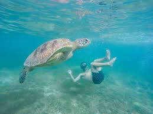
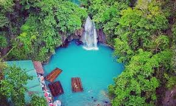

Travel Treasures
Travel Treasures
This is a travel blog that embark on unforgetable journeys, featuring beautiful distanation in Cebu province
.jpg)
Explore the Hidden Gems of Cebu Province
Beautiful places that are found in the Province of Cebu
Dumanjug
.jpeg)
Dumanjug, located in ugsouthwestern Cebu, is known for its historical charm and serene environment. Key attractions include the Dumanjug Town Plaza, offering a glimpse into local heritage and culture.
CROWD'S FAVORITE
- Baclayon Church
- Virgin Island Sand Bar
- Roro
Ronda

CROWD'S FAVORITE
Ronda is a small town on Cebu’s southwestern coast, famous for its picturesque coastline and local markets. Visitors can enjoy the town’s relaxed beach atmosphere and vibrant market scene.
- Ronda park
- Kasadya beach
- Lusno falls
- Mangroves tunnel
Moal boal

Moalboal, situated on Cebu’s southwestern coast, is renowned for its diving spots and the Sardine Run. Panagsama Beach is a hub for snorkeling and diving, offering vibrant marine life and clear waters.
CROWD'S FAVORITE
- Panagsama Beach
- Archery-Asia
- White Sand Basdako
Badian

These early inhabitants relied on the abundant natural resources surrounding the falls for their livelihood, intertwining their daily lives with the rhythms of nature.
- Canyoneering
- Kawasan falls
- Lambug beach
Cebu Province offers an unparalleled blend of natural beauty, vibrant culture, and rich history, making it a must-visit destination. From its pristine beaches and stunning waterfalls to its lively festivals and delectable cuisine, Cebu caters to every traveler’s desires. Whether you're seeking adventure, relaxation, or a deep dive into local traditions, Cebu provides a unique and unforgettable experience that will leave you with lasting memories and a desire to return. Embrace the charm of Cebu and discover why it is truly one of the Philippines' most enchanting gems.
Contact us for more information
About us